Benjamin Todd
12/12/24
Overview
For my national park app, I chose Redwood National Park, as well as the surrounding state parks. I wanted to create an app that I would use and enjoy. I personally love the Redwoods, and I wanted to make an app that would help people explore and enjoy each part of the park to its fullest, and reducing as much travel friction as possible. I took inspiration from the NPS, as well as the AllTrails app. One thing I found in an interview I did early on is that the person I interviewed said she used several different websites to plan a trip.
1 - Objectives & Direction
In the beginning of my project, I wanted to identify the objectives of my app. To do this, I created several personas that might be interested in using the app, and identified rough demographics, and well as user wants. I decided that the users of my app would generally be older, those who are the ones planning, navigating, and taking care of the various logistics of the trip. I took into account age, technology skills, as well whether they lived in state, or outside of state. In addition to this, I interviewed my friend Abi, who's been on several trips to national parks, and is often the person who planned out the trips. I asked her about how she learned about the parks, how she planned trips, as well as what information is important to her while she's in the park. Based on my interview I got the following information:
View Interview Notes Here- Live, up to date information, especially for hikes is very important
- She rarely used park maps, or other pamphlets for information. They were more like a souvenier to her than actual helpful info
- When inside the park, she very often relied solely on her research, and her plans, and rarely used visitor centers for information for her trip
- She used a variety of resources, including AllTrails, the NPS website, and several other sites to learn more, and plan her trip
- She had difficulty with info about small things like rules, hours, pet info, and fees
Based on my persona breakdown, and my interview, I created the following objectives:
- I want to reduce friction as much as possible, by providing every aspect of information they would need in an easy to read format.
- I wanted to provide fun information about the park, and give them something that they could get excited about.
- I wanted this to be a tool they could use before they visit, exploring the different locations, as well as being a crucial tool once they arrive, and are visiting.
- I wanted it to be simple, and easy to use, allowing even those who might be less technologically proficient to use and enjoy the app.
2 - Research
After I identified the direction that I wanted to take the app, I did a lot of research seeing how different apps tried to achive what I wanted to accomplish. I downloaded several national park apps on both android and apple, to see how they approached the problem. After looking around, the big thing that I noticed was that all the national park apps were trying to be a one-size-fits-all approach, as they had information about all the national parks, in comparison to just one. I wasn't a fan of most of them, however, as I spent a lot of time in the NPS app, I found I enjoyed it a lot. The NPS app does so many things right. They have an easy to use app, with lots of data, and a map to explore. However, due to the scope and the size of the app, there was quite a bit that fell by the wayside. Hiking and biking trail information was very much lacking, and there was a lot of small information that would have been helpful, but just wasn't there. In addition, one section I took notice of that I really enjoyed, but felt underexplored was the Self Guided Tours. This section had 7 different self guided tours that took you from location to location on the map, allowing you to explore the redwoods in a way that was easy to follow. However, this was very unrefined, just cycling through a series of cards, following the tour on a map. After spending more time, I realized that that the redwoods were perfect to explore and expand upon the idea of these self guided tours. While other parks only had one or two, the redwoods had seven, due to its large size, and many different scenic locations, trails, and parks.
3 - Scope & Brainstorming
After my research, I had a much better idea of what I wanted to create, as well as what I wanted it to look like and include. I spent time identifying the different sections to include, making a rough site map, as well as figuring out any and all information that each section, and location page would need. I also spent time brainstorming, and expanding upon the self guided tour by NPS. I wanted to figure out the flow, important information, any pain points, as well as how to solve them. I also experiemented with the idea of doing a scavenger hunt, but I decided against it, as I felt it could introduce too many problems with the overall use of the app.
4 - Sketches & Wireframing
After identifying the scope of my project, I got to work, sketching out the rough look and feel of each page. Shortly after I jumped into figma, playing with my sketches, and got to work. I played around with different card looks, as well as trying to figure out the various technical things I would need to do in order to create the app I wanted.
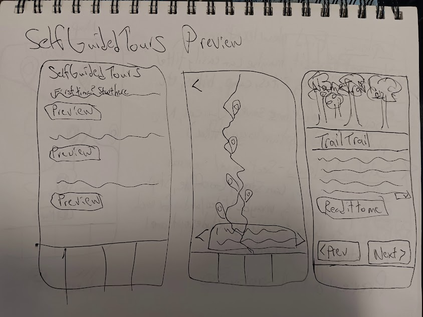 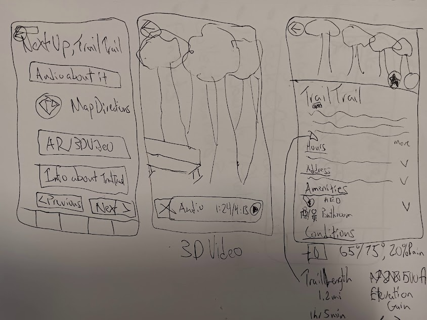 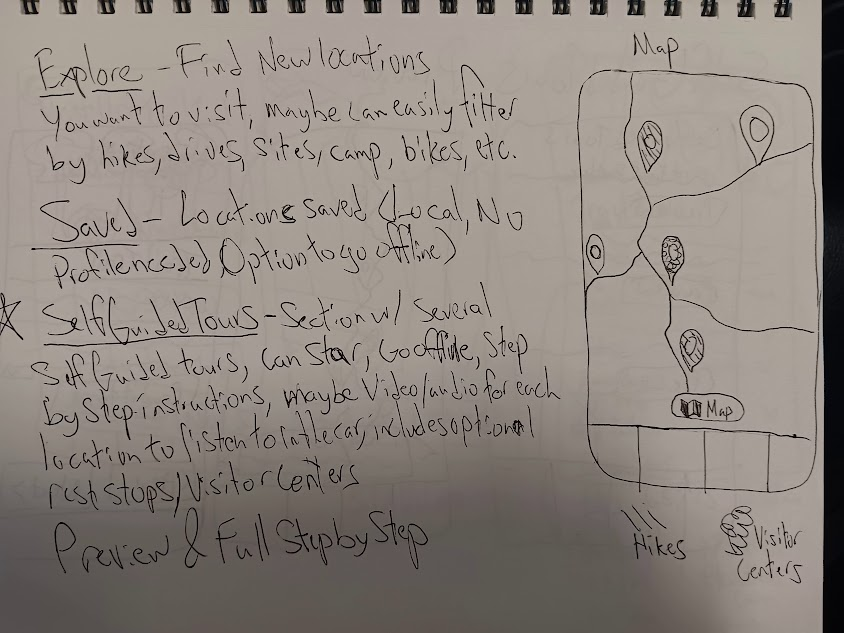 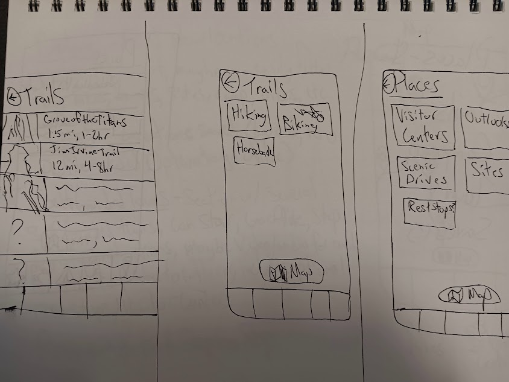 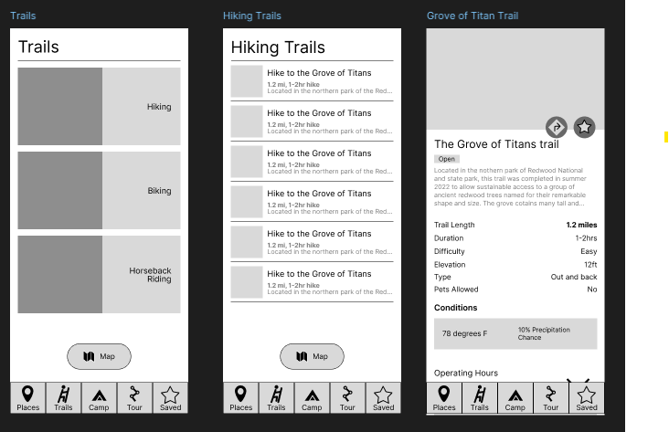 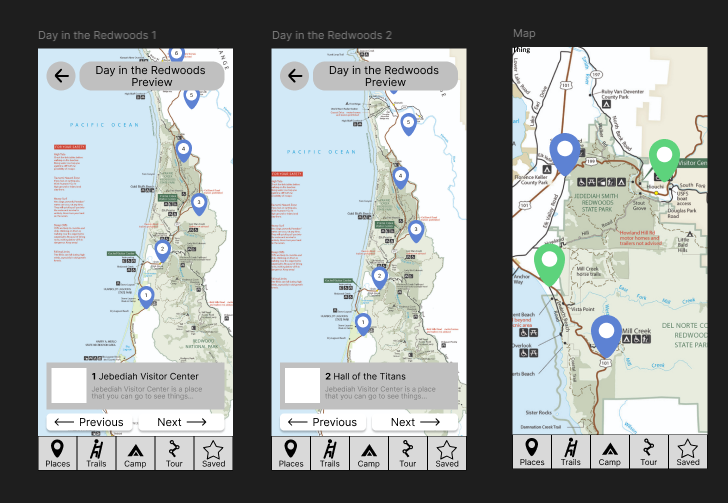5 - Assets and Style Guide
As I finished with my wireframes, I soon jumped into my style guide. I did a bit of research, looking at different redwoods websites, and found that different shades of green seemed to be the main palette. I created a palette, and worked on typeface. I knew that this was an information app, so I decided to stick to simple san serif fonts. At one point I played with a more fun, curly font for my headers, but inevitably decided against it. In addition, I started creating all of my assets I needed for the app. Because of the nature of my app, and the large number of locations, I knew that I would be creating a lot of very similar frames, with small differences for different information. I decided on a rough icon style, using icons from iOS 17 as a guide, and created my assets.
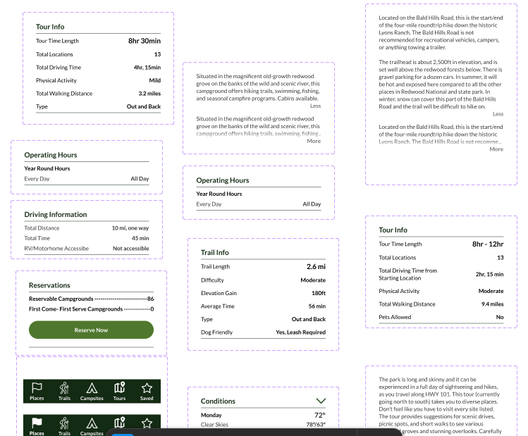 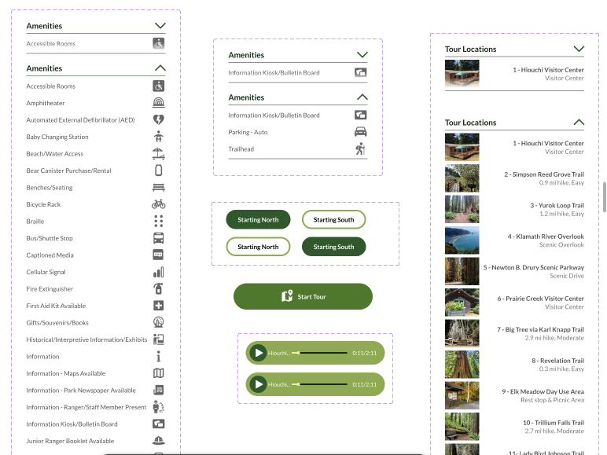 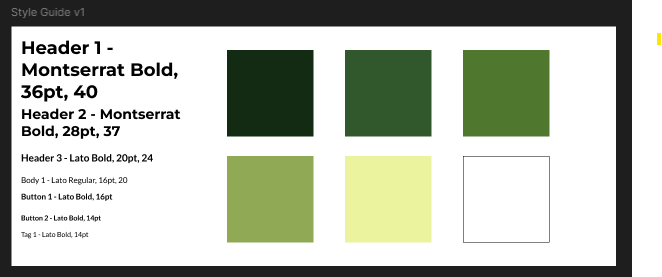6 - Assembly and Prototype
After creating my styleguide, and creating a number of various assets, I began putting pages together, one by one, figuring out what information I wanted to include, and what wasn't nessecary. In addition, I spent a bit of time figuring out how to do several difficult things, including a walkthrough map, for the self guided tour, different components and an interactive map, that links to the appropriate pages. One thing I learned early on in the assembly of each page was I knew I could not make this app the size that I wanted given my time frame. Given the nature of the self guided tours, and the large amount of locations in the Redwoods, I knew I had to change my expectations, in order to create a good, working prototype. I decided on just making a handful of locations, one self guided tour, and only one location per section.
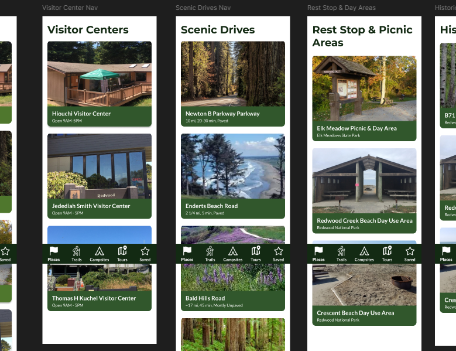 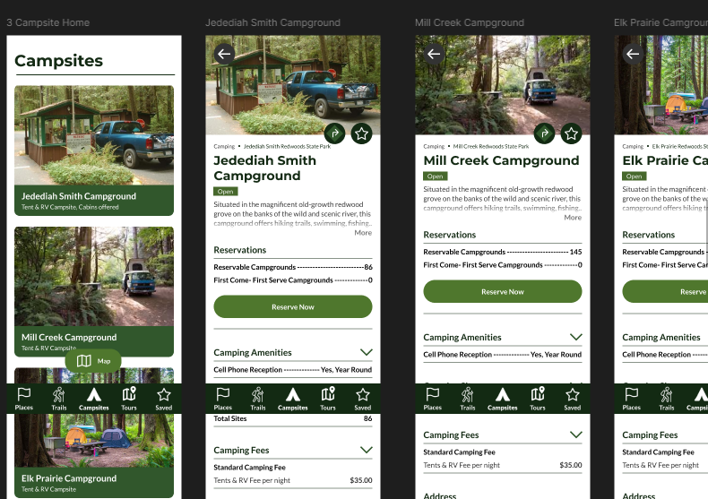 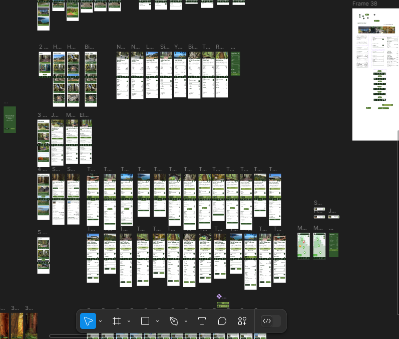7 - Feedback and Final Prototype
After hours spent assembling each section, and working through the self guided tour, I was able to get some great feedback about my prototype from my teacher, and fellow students. The app overall was good, but a few things, such as the size of the home cards, and the stickiness of my buttons needed to be changed. I took their valuable feedback, adjusted it, and was able to create a pretty functional, easy to use, and engaging app that I am personally proud of.
Reflection & Lessons Learned
I'm proud of what I was able to accomplish over the course of this project. I had high goals for my project, and I didn't realize how much time and effort this would take, but I'm happy with what I did. However, there's a lot that I would do differently, if I were to do this assignment over again.
I didn't realize how much work a full 13 step self guided tour would take to create, in addition to the rest of the app. I realize now how important it is to fully research the scope of the project, in order to better plan out my time, and my ability to get this done. I would also spend less time focusing on the content, and focus more on the design and the UX. I spent a large portion of my time copy and pasting information, and even then, I was only able to create one type of each page.
I also learned the power of feedback. I spent the whole time working my way through my prototype, assuming that what I made was pretty good. While it was, I had a lot of blindspots, often in small user experience elements, such as the placement of buttons. After I finished, I was showing off the app to a friend, and it showed me that there was a lot that I missed, as he struggled a bit working his way through the app. In future projects, I want to get more outside feedback, to see how different people interact with my projects.
Overall, I am so happy for this experience. This was my first big solo project, and I'm proud of all my work, both in figma, and outside of it. This project has given me a lot of confidents to pursue bigger projects, and create real, interactive prototypes that I can be proud of. I'm grateful for the opportunity, and I'm excited to see what I can create next!